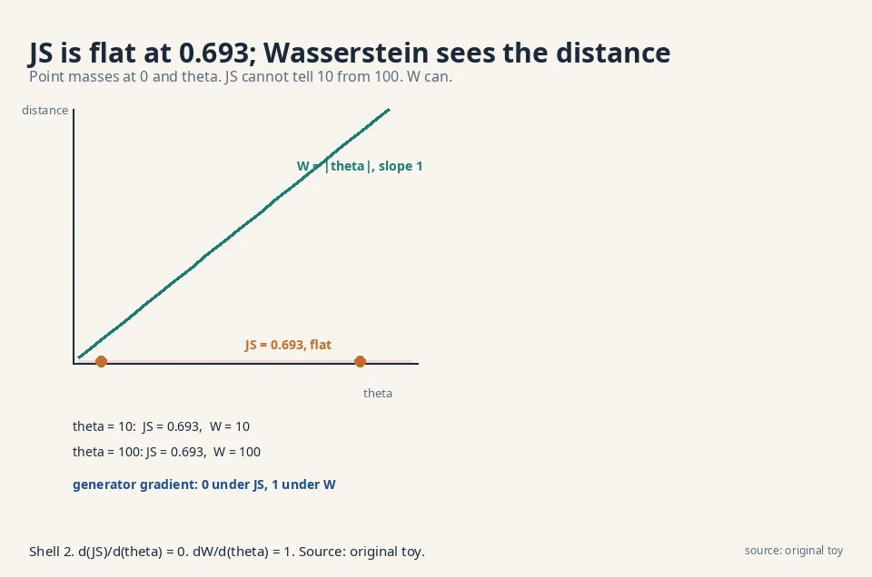
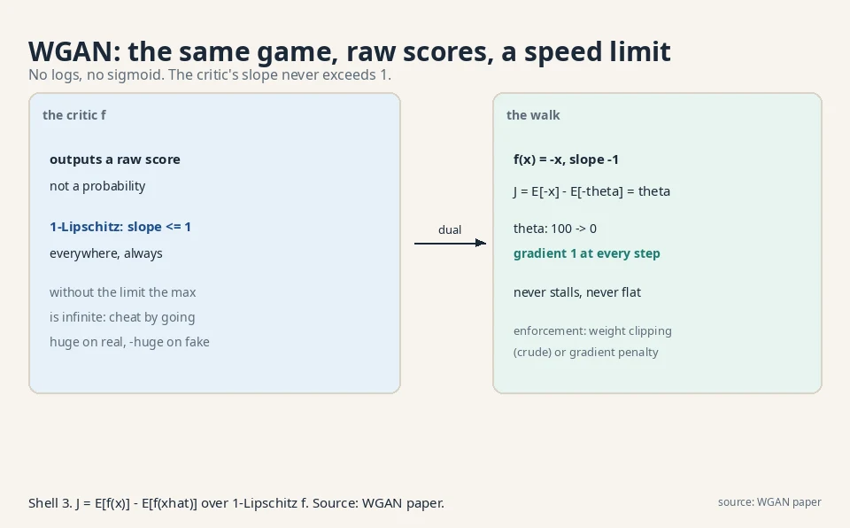
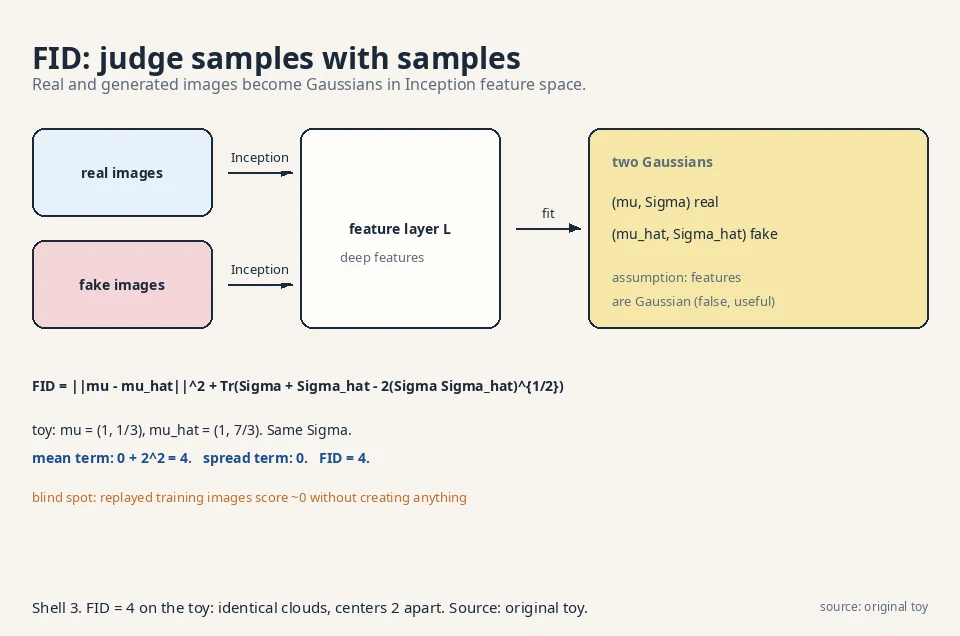
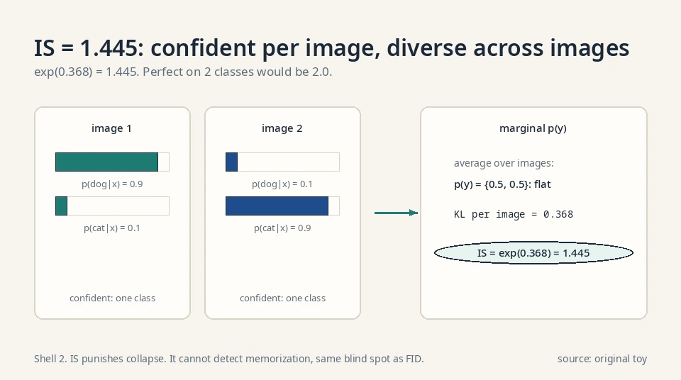
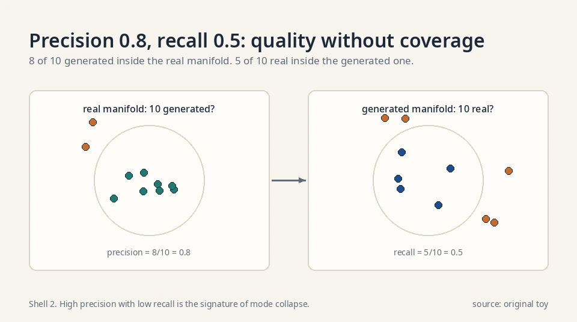
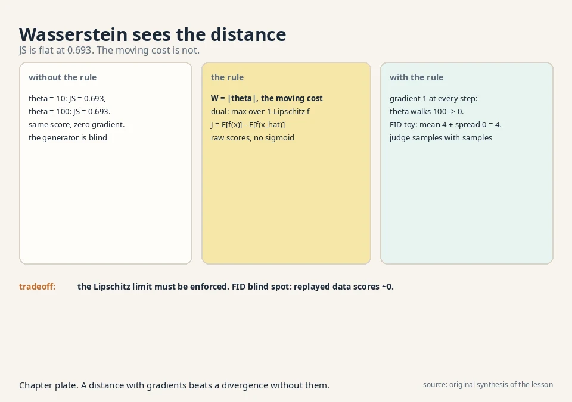

Lecture 5: Wasserstein GANs and Judging a Generator
Video blocked (ad-blocker or local file mode).
Watch on YouTubeVideo not loading? Watch on YouTube
The lecture video for this lesson: the earth mover's distance and the WGAN game. Timestamps in the text link to the exact moment.
The task: a distance that never goes numb
Lesson 4 left two open wounds. The JS-like divergence saturates: when the model is far from the data, the distance sits near its maximum and its gradient nearly vanishes, so the generator gets no signal. And there is no way to score a trained generator, because it has no likelihood.
Both wounds come from the same root: the divergences so far only care about probability ratios at each point. When the model and the truth do not overlap at all, the ratio is 0 or infinite everywhere, and every such pair looks equally “maximally far”. A model 10 units away scores the same as a model 100 units away. No gradient can point downhill if the whole surface is flat.
First attempt: watch JS go flat
The point-mass toy
Make the toy as stark as possible. The truth is a point mass at 0: P_X = {0: 1.0}. The model is a point mass at θ: P_θ = {θ: 1.0}. They never overlap (for θ ≠ 0).
0.693 twice: the number that says nothing
Compute the Jensen-Shannon divergence for θ = 10 and θ = 100.
theta = 10: P_X = {0: 1}, P_theta = {10: 1}, M = {0: 0.5, 10: 0.5}
JS = 0.5*log(1/0.5) + 0.5*log(1/0.5) = log 2 = 0.693
theta = 100: M = {0: 0.5, 100: 0.5}
JS = log 2 = 0.693
Identical: 0.693 both times. JS cannot tell 10 from 100. Its gradient with respect to θ is exactly zero. The generator is lost: every direction looks the same. This is saturation made quantitative, and it is why Lesson 4’s generator stalled. (All logs in this lesson are natural logs, base e.)

The key question
Is there a distance between distributions that keeps working when they do not overlap: a distance that says 10 is closer than 100?
The new idea: the earth mover’s distance
Moving cost, not ratios
The Wasserstein distance (earth mover’s distance) asks: how much mass must be moved, times how far, to reshape one distribution into the other? On the point-mass toy the answer is obvious. All the mass sits at θ and must travel to 0:
W(P_X, P_theta) = |theta - 0| = |theta| theta = 10: W = 10 theta = 100: W = 100
Ten is closer than a hundred, and the gradient is constant: dW/dθ = 1 (for θ > 0), pointing downhill no matter how far apart the distributions are. No flat region. No saturation. This is the whole appeal: a distance with usable gradients everywhere.
The formal definition matches the intuition: W is the minimum, over all ways of pairing mass between the two distributions, of the average distance mass travels. For point masses there is only one pairing, hence |θ|. For spread-out distributions the pairing problem is real, but the property survives: W varies smoothly as the distributions move.
The dual form: Kantorovich-Rubinstein
To train with it, the lecture uses the dual form (Kantorovich-Rubinstein): the Wasserstein distance equals the best achievable value of E[f(x)] − E[f(x̂)] over all 1-Lipschitz functions f. Lipschitz is a speed limit: the function’s slope never exceeds 1 anywhere.
Why the speed limit is load-bearing: without it the max is infinite. Set f huge on real points and hugely negative on fakes, and the objective explodes. The “distance” becomes meaningless. With the slope cap, the best f measures exactly the earth-moving cost. The constraint is not a technicality. It is what makes the dual equal the distance.
The WGAN: the same game, new rules
The WGAN is therefore the Lesson 3 game with two changes:
J = E[ f(x) ] - E[ f(x_hat) ] (no logs, no sigmoid) f must stay 1-Lipschitz (the speed limit)
The critic outputs a raw score, not a probability. It maximizes J. The generator minimizes it.
The walk from 100 to 0, worked
On the point-mass toy with f(x) = −x (slope −1, valid): J = E[−x] − E[−θ] = θ. Minimizing over θ drives θ to 0 with gradient 1 at every step. The generator walks downhill from 100 to 0 without ever stalling. Compare: the JS game gave gradient zero the whole way. The number to remember: 100 steps of size 1 land exactly at 0. Under JS, 100 steps of size anything land nowhere.

Enforcing the speed limit, option 1: weight clipping
Enforcing the speed limit is the engineering. The original WGAN clips the critic’s weights to a small box after each step, which crudely bounds the slope. It works but cripples the critic’s capacity: the critic can only use a corner of its expressiveness. The price is a slower, more constrained critic than the GAN’s free one.
Enforcing the speed limit, option 2: gradient penalty
The later gradient-penalty variant penalizes the slope directly: add (||∇f|| − 1)² to the critic’s loss. Same price (a slower, more constrained critic), better training. The decision rule: clipping is simpler and weaker. The gradient penalty trains better and costs more tuning.
Worked: the penalty is 40 on a slope-3 critic
The WGAN-GP (Wasserstein GAN with gradient penalty, Gulrajani et al. 2017) loss for the critic is:
L = E[f(x_hat)] - E[f(x)] + lambda * E[ (||grad f(x_mix)|| - 1)^2 ] x_mix = epsilon * x + (1 - epsilon) * x_hat, epsilon ~ Uniform(0,1)
Take the toy critic f(x) = −3x (slope 3, three times the limit) and λ = 10, the paper’s value. ||∇f|| = 3 everywhere, so the penalty is 10·(3−1)² = 40. The critic pays 40 for speeding. Gradient descent on L shrinks the slope toward 1, where the penalty hits 0. The mixture points x_mix matter: the penalty is enforced on the segments between real and fake points, exactly where the dual’s slope constraint binds.
Spectral normalization: a cleaner speed limit
A linear layer’s Lipschitz constant is its largest singular value σ_max(W). Spectral normalization divides each weight matrix by its σ_max after every step, capping each layer’s slope at 1. A stack of such layers has total slope at most 1.
Worked: W = [[2, 0], [0, 0.5]]. Its singular values are 2 and 0.5, so σ_max = 2. Normalize: W/2 = [[1, 0], [0, 0.25]]. The layer can no longer amplify any input direction by more than 1. Unlike clipping, no capacity is fenced off: the weights keep their directions, only the scale is capped. Unlike the gradient penalty, there is no extra loss term to tune. The σ_max is estimated by one power-iteration step per update, cheap.
What the other divergences say on the point-mass toy
For completeness, run the Lesson 3 family on the point-mass toy (P_X = δ_0, P_θ = δ_θ, θ ≠ 0):
- KL: infinite (the model assigns 0 to the truth’s point). Reverse KL: infinite. χ²: infinite.
- TV: ½(|1−0| + |0−1|) = 1. Constant: no gradient.
- JS: log 2 = 0.693. Constant: no gradient.
- Wasserstein: |θ|. Gradient 1.
Every ratio-based divergence is either infinite or flat on disjoint supports. Only the moving-cost distance sees the gap. This table is the whole argument for Wasserstein in one glance.
The second wound: judging without a likelihood
The procedure, step by step
A trained generator has no density, so MLE cannot score it. The lecture’s answer is to judge samples against samples: take real data and generated data, and measure the distance between the two sets. The industry standard is the Fréchet Inception Distance, FID.
The procedure, confirmed in the lecture transcript:
- Take a pre-trained Inception network (a deep image classifier trained on ImageNet). Its inner layers are known to respond to the same visual structure humans notice.
- Pass n real images and n generated images through it. Take the output of one deep layer (the L-th layer, a hyperparameter) as the feature of each image.
- Compute the mean μ and covariance Σ of the real features, and μ̂, Σ̂ of the generated features.
- Assume both feature sets are Gaussian. The FID is the Wasserstein (Fréchet) distance between those two Gaussians:
FID = ||mu - mu_hat||^2 + Tr( Sigma + Sigma_hat - 2*(Sigma*Sigma_hat)^{1/2} )
The first term punishes shifted centers. The second punishes different spreads and correlations. Lower FID means the generated distribution sits closer to the real one. FID = 0 means the two Gaussians match exactly.
Worked: FID = 4 on six points
Work it by hand on a six-point toy. Real features (2-D): (0,0), (2,0), (1,1). Generated features: (0,2), (2,2), (1,3). Same cloud, shifted up by 2.
mu_real = (1, 1/3) mu_gen = (1, 7/3)
Sigma_real = Sigma_gen = [ 2/3 0 ]
[ 0 2/9 ]
||mu_real - mu_gen||^2 = 0^2 + 2^2 = 4
( Sigma_real * Sigma_gen )^{1/2} = Sigma_real (they are equal)
Tr( Sigma + Sigma - 2*Sigma ) = 0
FID = 4 + 0 = 4
The whole distance comes from the mean shift, exactly as it should: the clouds have identical shape, one sits 2 units higher. If the generator also matched the center, FID would be 0. One number, computed from samples, no likelihood needed.
Why features, not pixels
The lecture’s cited study found Inception’s inner layers track human visual judgment. Pixel distance says a one-pixel shift is a big change. Feature distance says it is nothing. A generated face with perfect pixels but wrong structure scores well on pixel metrics and badly on FID. FID judges what humans would judge, approximately. The price: FID is an image metric. For text or audio you need a different feature extractor, and the “which layer” choice is a hyperparameter that moves the number.

The Inception Score: FID’s older sibling
The definition
Before FID, the field used the Inception Score (IS). It uses the same Inception classifier but asks a different question: for each generated image, how confident is the classifier, and across images, how diverse are the predicted classes?
IS = exp( E[ KL( p(y|x) || p(y) ) ] )
x generated
p(y|x) is the classifier’s label distribution on one image. p(y) is the average over all generated images. The KL is large when each image is confidently one class (sharp p(y|x)) and the classes vary across images (flat p(y)). Both properties in one number.
Worked: IS = 1.445 on two images
Two generated images, two classes. The classifier says p(y|x_1) = {0.9, 0.1} and p(y|x_2) = {0.1, 0.9}: each image confident, classes split evenly. The marginal is p(y) = {0.5, 0.5}.
KL per image = 0.9*log(0.9/0.5) + 0.1*log(0.1/0.5)
= 0.9*0.588 + 0.1*(-1.609) = 0.368
IS = exp(0.368) = 1.445
A perfect score on 2 classes would be 2.0 (every image certain, classes uniform). We get 1.445 because 0.9 is not 1.0. Now the failure: a generator emitting one perfect dog photo forever gets p(y|x) = {1.0, 0.0} and p(y) = {1.0, 0.0}: KL = 0, IS = 1.0, the minimum. IS punishes collapse. But a generator emitting real training photos in class balance also scores well: IS cannot detect memorization, same blind spot as FID.
IS versus FID
IS never looks at real images: it judges generated samples against the classifier’s own idea of classes. FID compares generated features to real features directly. The decision rule: IS rewards sharp, diverse samples even if they match no real data distribution. FID rewards matching the real distribution. Papers report both, and trust FID more.

The Fréchet distance in one dimension
In 1-D the Fréchet formula simplifies to (μ−μ̂)² + (σ−σ̂)²: mean gap squared plus spread gap squared. Two worked cases. N(0,1) vs N(2,1): same spread, centers 2 apart. FID = 4 + 0 = 4. N(0,1) vs N(0,4): same center, spreads 1 and 2. FID = 0 + (1−2)² = 1. The first is a shifted cloud, the second a fatter cloud. The formula prices them separately: 4 for the shift, 1 for the fattening. In high dimensions the (ΣΣ̂)^{1/2} term does the same job for the full covariance: it matches spreads and correlations, not just centers.
Precision and recall for GANs
FID is one number. Precision and recall (Kynkäänniemi et al. 2019) split quality from diversity. Embed real and generated images in feature space. Around each set, build a manifold from k-nearest-neighbor balls. Then:
- Precision: fraction of generated samples inside the real manifold. Are the fakes realistic?
- Recall: fraction of real samples inside the generated manifold. Does the generator cover the real variety?
Toy: 10 real points, 10 generated. 8 generated fall inside the real manifold: precision 0.8. 5 real fall inside the generated manifold: recall 0.5. Read it: quality is decent, coverage is half. High precision with low recall is the signature of mode collapse: every sample looks real, but half the world is missing. FID would report one middling number. Precision/recall names the failure.

The honest price
Wasserstein’s remaining costs
Wasserstein fixes saturation but not everything. The Lipschitz constraint is awkward: weight clipping is crude and the gradient penalty adds cost and tuning. WGAN training is steadier than GAN training but slower, and mode collapse can still happen (a collapsed model is still a valid low-W point if the critic is weak). The saddle point is tamer, not gone.
FID’s blind spots
FID has its own honest limits, and the lecture states the frame plainly: it judges in feature space, not pixel space. It needs the Inception network, so it is an image metric. For text or audio you need a different feature extractor. It assumes Gaussian features, which is false but useful. It is biased by sample size (small n inflates it), and it cannot detect memorization: a generator that replays training images scores a perfect FID. Judging creation remains partly human. The decision rule: never report FID alone. Pair it with a memorization check (nearest-neighbor distances to the training set) and a diversity check (cluster the samples).
| Wound from Lesson 4 | Answer | How | Number |
|---|---|---|---|
| Saturation (JS flat at 0.693) | Wasserstein distance | Gradient is 1 everywhere. No flat region | W = 10 vs W = 100. JS = 0.693 both |
| No likelihood to score models | FID | Wasserstein distance between Inception-feature Gaussians | Toy FID = 4, all from the mean shift |
| Mode collapse | Partially helped | Non-saturating gradients explore more, but collapse still possible | Not eliminated |
Where this runs in real systems
Verified deployments, October 2026:
WGAN-GP (Gulrajani et al. 2017) became the stable adversarial baseline for several years: it trains without the saturation stalls of Lesson 4 and without the capacity crippling of weight clipping. Progressive GAN trained its early configurations with WGAN-GP before switching to the non-saturating loss.
FID outlived the GAN era: it is still the standard number for comparing image generators, including diffusion models, because it needs only samples. The landmark FID numbers, all on the same metric:
- DDPM (Ho et al. 2020): FID 3.17 on CIFAR-10, taking a clear bite out of the GAN-held record.
- ADM (Dhariwal and Nichol 2021): FID 4.59 on ImageNet 256×256 with classifier guidance, formally beating BigGAN-deep and ending the GAN era on that benchmark.
- StyleGAN papers report FID throughout: it is how the progressive-growing and style-based lines measured each gain.
When a paper reports “FID 3.2 versus 9.1”, it is running this lesson’s six-point toy at scale: two feature Gaussians, one Fréchet distance. [uncertain] Exact FID values across papers are not comparable unless the feature layer, sample count, and dataset split match.
Videos for this lesson
Lecture video: evaluation of generative models, the FID procedure and formula on the board. If the embed is blocked: watch on YouTube.

JS only sees probability ratios, so non-overlapping distributions all score the max: 0.693 for θ = 10 and θ = 100 alike, gradient zero. Wasserstein measures moving cost: W = 10 versus W = 100, with a constant downhill gradient of 1. The generator always knows which way to go. It approximates the Kantorovich-Rubinstein dual: max over 1-Lipschitz f of E[f(x)] − E[f(x̂)]. No sigmoid, no logs. The Lipschitz speed limit keeps the max finite. Weight clipping enforces it crudely. The gradient penalty enforces it directly.
Truth: half the mass at 0, half at 2. Model: all mass at 6. Pair the mass: the half at 0 travels 6, the half at 2 travels 4. Average distance: 0.5·6 + 0.5·4 = 5. So W = 5. The gradient with respect to the model’s position is 1: move the mass left and W falls one-for-one. No flat region, no surprise. Pair: half travels |0−1| = 1, half travels |2−1| = 1. W = 1. Moving the model to 0.5 gives 0.5·0.5 + 0.5·1.5 = 1.0. Same. The gradient is zero here: any point between 0 and 2 is equally good, because the mass is already bracketed. Wasserstein is honest about that too.
Without the slope cap, the dual max is infinite: the critic makes f huge on real points and hugely negative on fakes, and the “distance” explodes. The 1-Lipschitz limit is what makes the max equal the earth-moving cost. It is load-bearing, not a technicality. Clipping bounds the slope crudely by boxing the weights. It works but cripples the critic’s capacity. The gradient penalty adds (||∇f|| − 1)² to the critic loss, enforcing the slope directly where it matters. Better training, more tuning.
Pass real and generated images through a pre-trained Inception net, take one deep layer’s outputs as features, fit a Gaussian to each feature set, and compute the Fréchet (Wasserstein) distance between the Gaussians: ||μ − μ̂||² + Tr(Σ + Σ̂ − 2(ΣΣ̂)^{1/2}). In the hand toy the two clouds had identical shape with centers 2 apart, giving FID = 4. Lower is better. 0 is a perfect match. Because the lecture’s cited study found Inception’s inner layers track human visual judgment. Pixel distance says a one-pixel shift is a big change. Feature distance says it is nothing. FID judges what humans would judge, approximately.
Yes. A generator that memorizes and replays training images gets FID near zero without creating anything. FID also assumes Gaussian features, is biased upward at small sample sizes, and only works where a good feature extractor exists (images). It is a judge, not a proof. Because the alternatives are worse. Likelihood does not exist for GAN generators, human rating does not scale, and pixel metrics disagree with perception. FID is the best cheap proxy, used with its limits stated.
Not necessarily. FID is biased by sample size: fewer samples inflate it. If your run used 50,000 samples and the baseline used 10,000, the gap may be pure bias. Also the feature layer and dataset split must match. The decision rule: recompute both under identical settings (same n, same layer, same split) before claiming anything. A 0.5 gap under matched settings is a real but small win. Memorization and diversity. Nearest-neighbor distances from samples to training images (catches replay), and cluster counts over samples (catches mode collapse). FID alone certifies neither.
When you need the adversarial sample quality and can afford the saddle point. WGAN fixes GAN saturation but keeps the two-player dynamics. If your constraint is training stability above all, the latent-variable road (Lessons 6-10) has no adversary at all: plain minimization, monotone loss curves. The lecture’s verdict is explicit: the field moved to latent-variable models because the saddle point, even tamed, is still a saddle point. Where sample sharpness per unit of compute matters most and you can babysit training. Historically that was high-resolution faces (the StyleGAN line). [uncertain] Whether any current frontier system still trains pure GANs is not public.
Recap: the whole lesson on one screen
- The wound. JS saturates: θ = 10 and θ = 100 both score 0.693. Zero gradient, no signal.
- The key question. Is there a distance that works when distributions do not overlap?
- The answer. Wasserstein: the cost of moving mass. W = |θ|: 10 vs 100, gradient 1 everywhere.
- The WGAN. Same two-player game, new rules: raw critic scores, 1-Lipschitz speed limit, no logs.
- Worked. With f(x) = −x, J = θ. The generator walks from 100 to 0 without stalling.
- The second wound. No likelihood, so judge samples with samples: FID.
- Worked. Six 2-D points, identical clouds shifted by 2: FID = 4, all from the mean term.
- The price. Lipschitz enforcement is crude. FID needs Inception, assumes Gaussians, and cannot catch memorization.
Official sources and further reading
Official: - W4L11: Wasserstein GANs: paper - W4L16: Evaluation of Generative Models: - FID procedure and formula confirmed in transcript.
Further reading: - Arjovsky, Chintala, Bottou, “Wasserstein GAN” (2017): - the dual form and weight clipping. - Gulrajani et al., “Improved Training of Wasserstein GANs” (2017): - the gradient penalty. - Heusel et al., “GANs Trained by a Two Time-Scale Update Rule Converge to a Local Nash Equilibrium” (2017): - the paper that introduced FID.
Caveats. The FID procedure, its formula, and the Inception/ImageNet details are confirmed in the W4L16 transcript. The W4L11 transcript was bot-blocked, so the WGAN treatment (duality, Lipschitz, clipping) follows the standard Arjovsky et al. presentation. [uncertain] The point-mass W = |θ| toy and the six-point FID = 4 computation are the lesson’s own.
Scope exclusion, documented. The playlist’s topic sequence lists Domain Adversarial Networks (DAN/UDA) in the W4 block: adversarial training applied to domain adaptation, where a domain classifier’s gradient is reversed to learn domain-invariant features. The recovered lecture transcripts contain no substantive treatment, and the playlist’s T8 (UDA) is a code tutorial, not math. It is excluded here rather than invented: a named gap, not a filled one.
Connections to the other courses
- CS229 L11 (diffusion models): that course never needs FID for training (its loss is plain denoising error), but FID is still how its samples are judged against GAN samples in papers. A worked tie: a diffusion model with FID 3.2 beats a GAN with FID 9.1 on the same dataset, and the number means the diffusion model’s feature Gaussian sits closer to the real one by exactly that Fréchet gap.
- CS336: the training-data memorization discussions there meet FID’s blind spot here: a model that replays training data scores perfectly on FID while creating nothing. Both courses converge on the same warning: no single metric certifies generation.